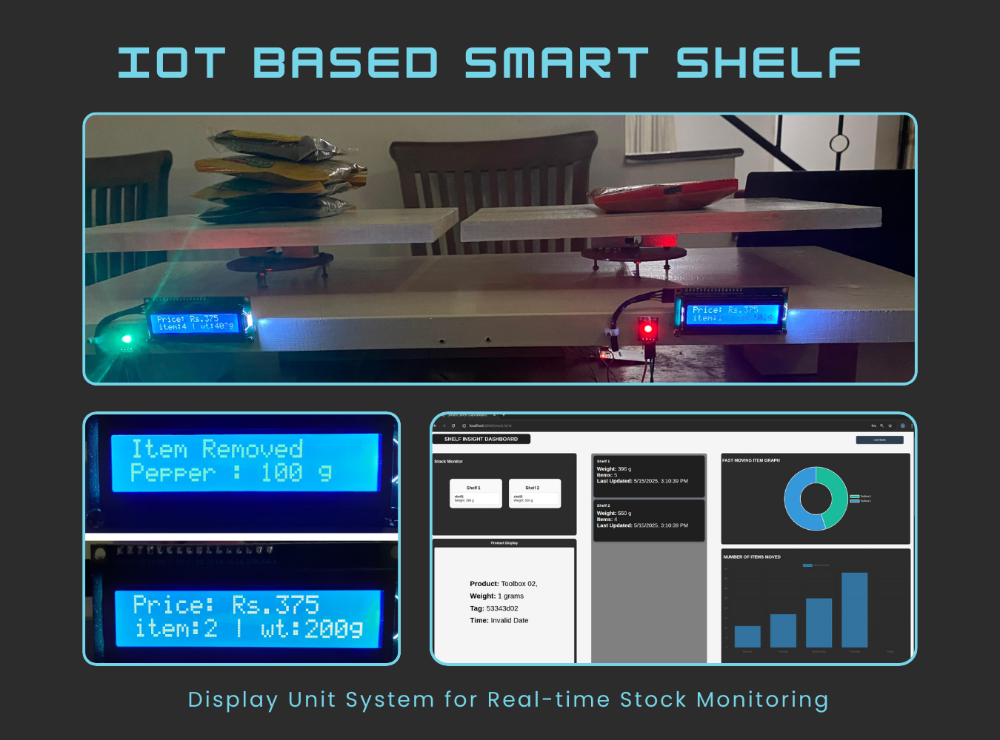
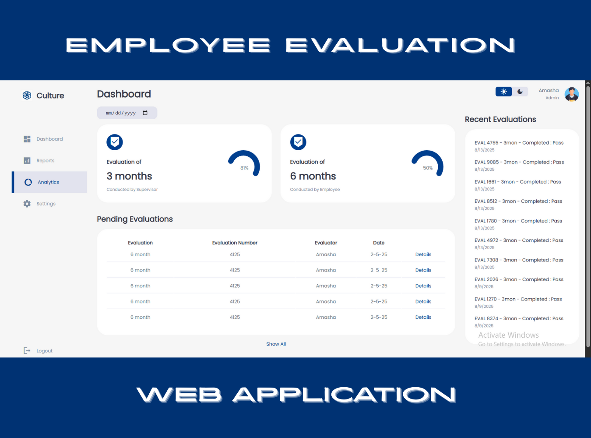

Development Projects
Portfolio Website
A personal online showcase highlighting my skills, projects, and design style with a clean, user-friendly interface.
Tech Stack : HTML | CSS | JavaScript

OstoCare
A mobile solution designed to support ostomy patients by providing resources, tracking tools, and access to healthcare professionals.
Tech Stack : Dart | Flutter | Firebase

IoT Based Smart Shelf
A real-time inventory monitoring system that tracks stock levels, item movement, and low-stock alerts.
Tech Stack : Arduino & ESP32 Programming | HTML | Firebase

NSBM Go
A university app that keeps students updated on events, clubs, and activities through an engaging, story-style interface.
Tech Stack : Dart | Flutter | Firebase

HR Evaluation App
A web-based solution for efficiently managing employee performance reviews and evaluation processes.
Tech Stack : HTML | CSS | JavaScript
Go Drive
An online platform streamlining vehicle rentals for tourists and service providers with an intuitive booking experience.
Tech Stack : C# | ASP.NET | MySQL